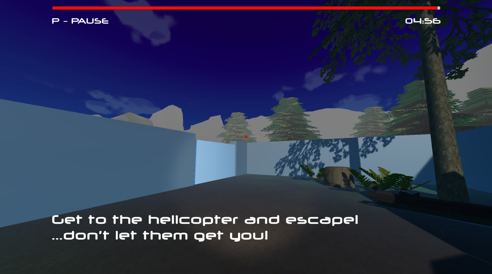
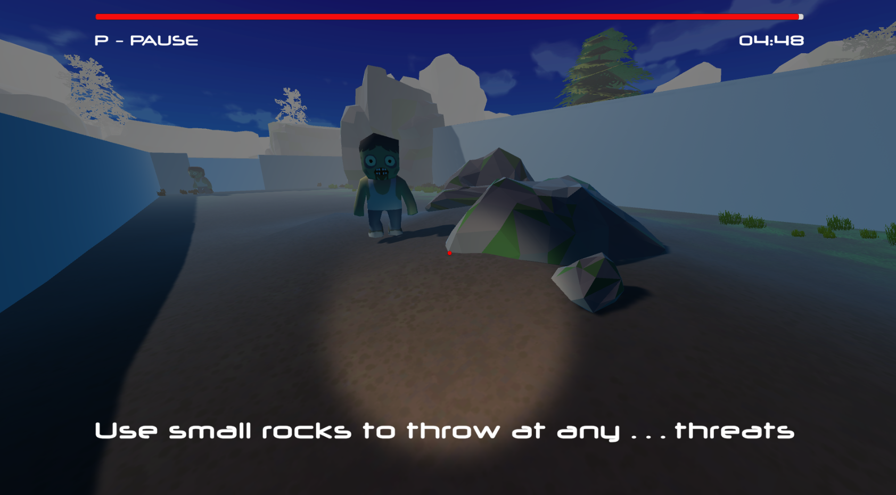
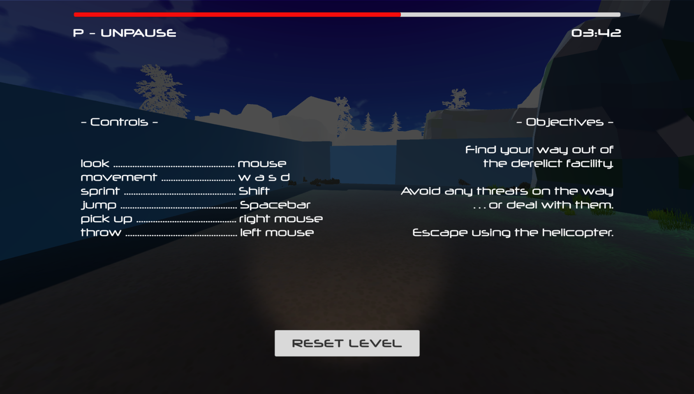
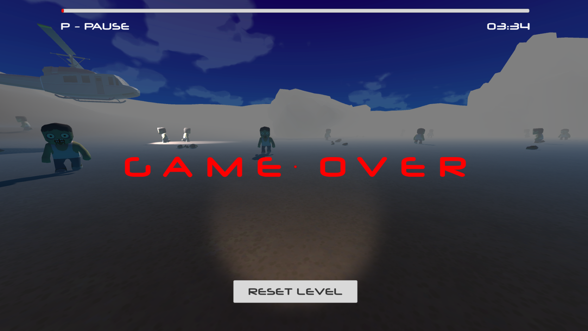
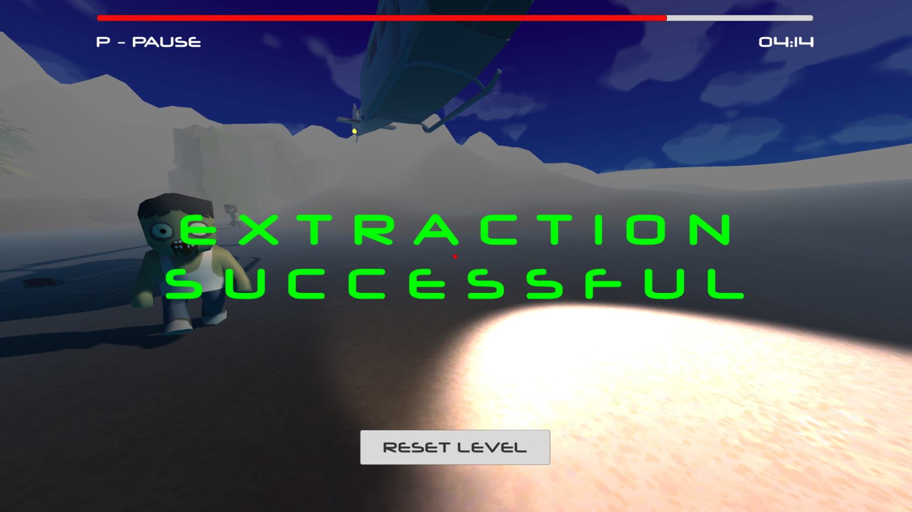
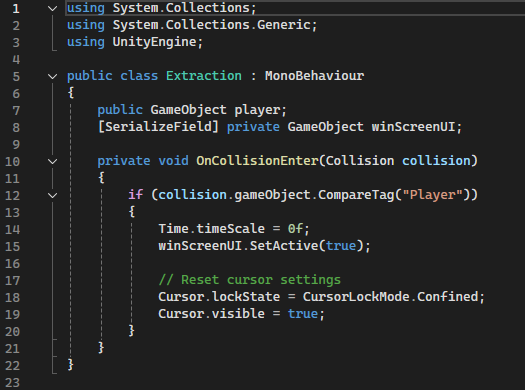
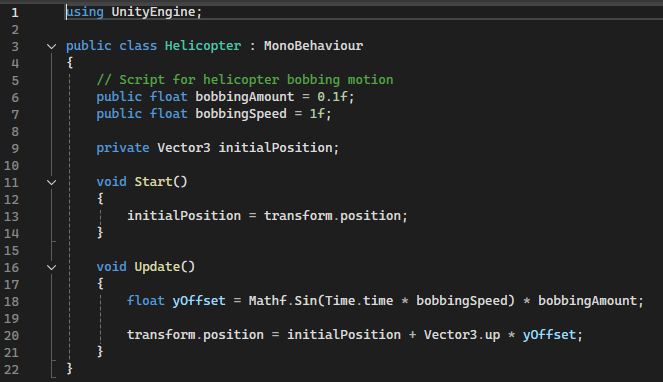
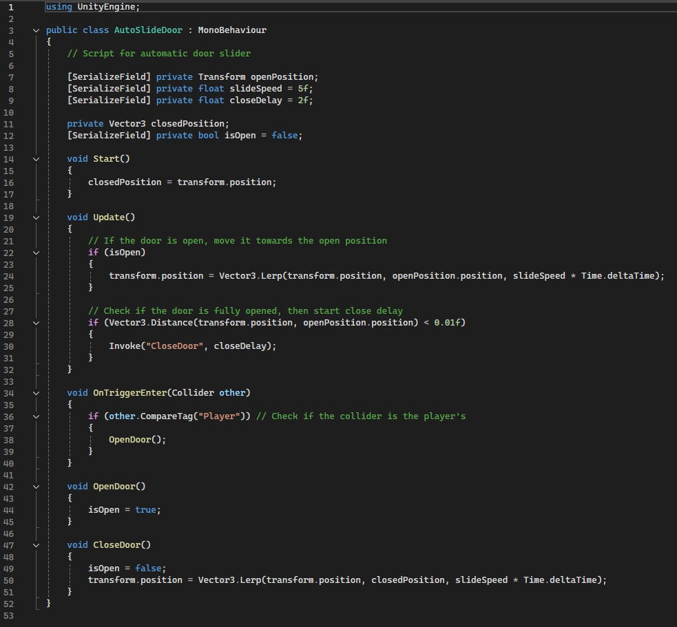
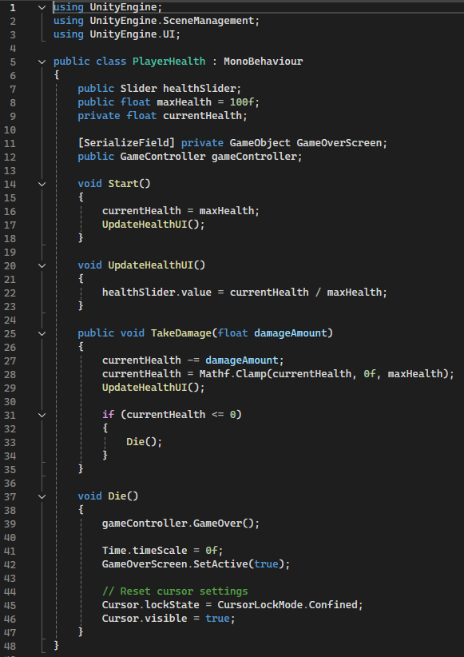
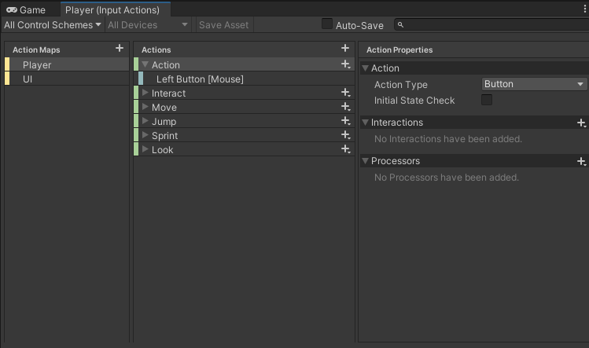

Zombie Extraction
Status: Ongoing
Total work hours: 60
Tools: Unity, Visual Studio
Scripting: C#
Project Description
This adventure-survival escape game is a project that I made as part of my Level Design course at the end of my second year of studies. It is an ongoing project that I intend to publish at some point (yeah, we've all heard that before). For this project I used recently acquired skills and free assets to make a cohesive playable level that should take no more than 5 minutes to play through.
Gameplay trailer
Tasks
For this project I learned to use the new player input system for Unity. This turned out to be a very nice and easy way to implement basic movement and add interaction with the surroundings. I chose to use the surroundings as the only source for the player to defend themselves in this frantic survival. It felt right given the theme. Players must find small rocks to pick up and throw at enemies. This was achieved using interactable Tags for the rocks and allowing the player input system to access any objects with this tag.
The enemy had to be programmed with some kind of basic movement AI. A navmesh was baked onto the terrain for the enemy to move on. The enemy script was made so that enemies move around randomly on the navmesh until they are within range of the player at which point they will approach the player to attack. Enemy animations were made using free animations from Mixamo.com and put together in the Unity animator using a blend tree.
The level itself was built in the Unity editor using a few different free assets from the Unity Asset store as well as the default assets in the Unity terrain builder tool (trees, grass, etc.) The walls and sliding doors were Unity 3D-objects that were initially used as placeholders but ended up staying as they added to the facility feel that the level is supposed to convey and matched well with low-poly look of the game. Post-processing effects such as fog were added to create an environment in which far-off objects are obscured.
The idea of the game is for the player to navigate out of the level and find the extraction point (a helicopter) waiting for the player at the end of the level. Th player must reach this target within 5 minutes, or the player loses. If the player takes too much damage they also lose. The player is 'equipped with a flashlight', i.e. there is a spot light with a short range and tight radius pointing in the direction that the player is looking.
A few basic UI layers were added both in-game (health bar, timer, tutorial texts) as well as for different menus (Start Game, Game Over, Win screen, Pause Menu). Each menu screen was paused the game (since it is a single player game) and was equipped with a Continue-button where applicable and a Restart Level-button.
An audiomanager was used to control the soundworld in the game. A custom-made progressive background soundtrack plays for the full 5 minutes starting as an ambient note that can just be heard above the environment sounds and escalates to a rhythmic drumbeat towards the end inducing a sense of urgency in the player as time runs out.
Functions
A few of the smaller scripts are displayed at the bottom of the page under Pictures. In addition to the SlidingDoor, Extraction (win screen), PlayerHealth and Helicopter scripts there are scripts such as the EnemyController, PlayerController and GameController as well as more stubs such as the HelicopterRotor script amongst others.
Problems & Testing
There are still many ideas to be implemented. As one example, the rocks could be shiny green both to make them easier to spot and would make sense that they're radioactive or something, which kills the enemies (instead of enemies just dying when hit by a regular rock). The game has been on exhibition at the faculty's biannual DemoDay and has been play-tested on a separate course with useful feedback gathered and waiting to be processed.
Project Reel

Start Game screen with game logo and
Start Game button.

In-game tutorial text, timer and
health bar.

First-person view of the flashlight
and one enemy that is approaching the
player.

The pause screen showing player
controls and objectives.

Game Over screen shown after the
health bar empties or time runs out.

Win screen shown once the player
successfully reaches the helicopter.

The Extraction script controlling the
Win Screen.

One of the helicopter scripts used to
make the helicopter 'bob' as it's
floating in the air.

The slide door script that activates
the automatic sliding doors whenever
the player gets close.

Player Health script with functions
to bring up the Game Over screen
once health runs out.

The player input manager in Unity.